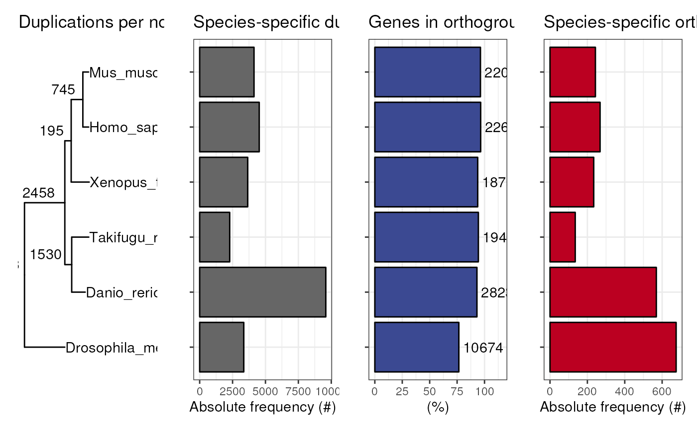

R/visualization.R
plot_orthofinder_stats.RdThis function is a wrapper for plot_species_tree,
plot_duplications, plot_genes_in_ogs,
plot_species_specific_ogs.
plot_orthofinder_stats(tree = NULL, stats_list = NULL, xlim = c(0, 1))Tree object as returned by treeio::read.*,
a family of functions in the treeio package to import tree files
in multiple formats, such as Newick, Phylip, NEXUS, and others.
If your species tree was inferred with Orthofinder (using STAG), the tree
file is located in Species_Tree/SpeciesTree_rooted_node_labels.txt.
Then, it can be imported with treeio::read_tree(path_to_file).
(optional) A list of data frames with Orthofinder summary stats
as returned by the function read_orthofinder_stats. If this list
is given as input, nodes will be labeled with the number of duplications.
Numeric vector of x-axis limits. This is useful if your node tip labels are not visible due to margin issues. Default: c(0, 1).
A panel of ggplot objects.
data(tree)
dir <- system.file("extdata", package = "cogeqc")
stats_list <- read_orthofinder_stats(dir)
plot_orthofinder_stats(tree, xlim = c(0, 1.5), stats_list = stats_list)
